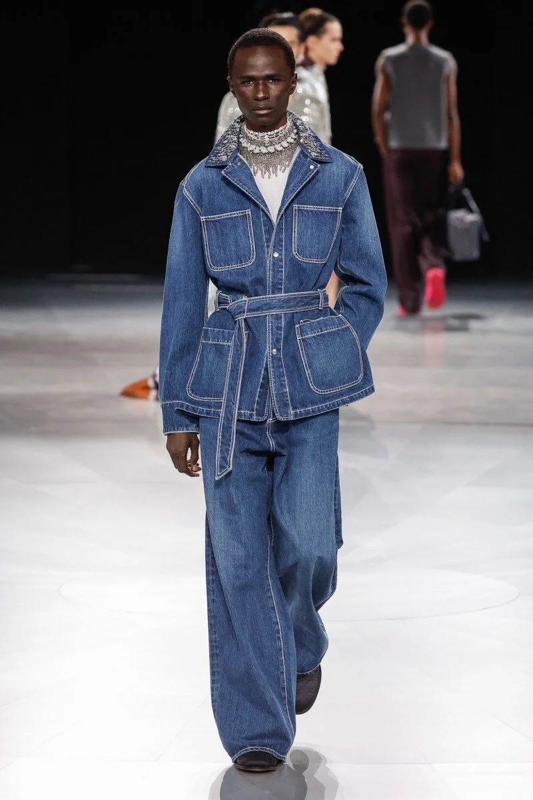

ТРЕНДИ НА 2026

🔥 ТОП стилів, які точно будуть популярні у 2026
- Архів — ТАК, і ще сильніше
Але не «total look», а точкові архівні речі.
Як саме:
одна архівна куртка / взуття / аксесуар
мікс із простим кежуалом або техно-речами
дизайнери 90-х – 2000-х
📈 Причина: втома від масмаркету + цінність рідкості.
- 2. Авангард — ТАК, але розумний
Не театральний, а носибельний авангард.
Як виглядає:
дивний крій, але зручний
асиметрія, обʼєм
темні та нейтральні кольори
📈 Вайб 2026: «я не кричу — я думаю»
- 3. Кежуал / Кежуалс — ТАК, це база
Вони нікуди не зникнуть, але стануть чистішими і дорожчими на вигляд.
Тренд:
якісні тканини
менше логотипів
акуратний силует
📈 Люди хочуть виглядати нормально, але не нудно
- 4. Горпкор — ТАК
Ідеально вписується в 2026.
Чому:
функціональність
tech-матеріали
місто + природа
📈 Буде міксуватися з кежуалом і авангардом
🧊 Нішеві стилі
- 5. Інді сліз
Зʼявлятиметься хвилями.
фестивалі
тусовки
арт-сцена
📊 Не мейнстрим, але живий